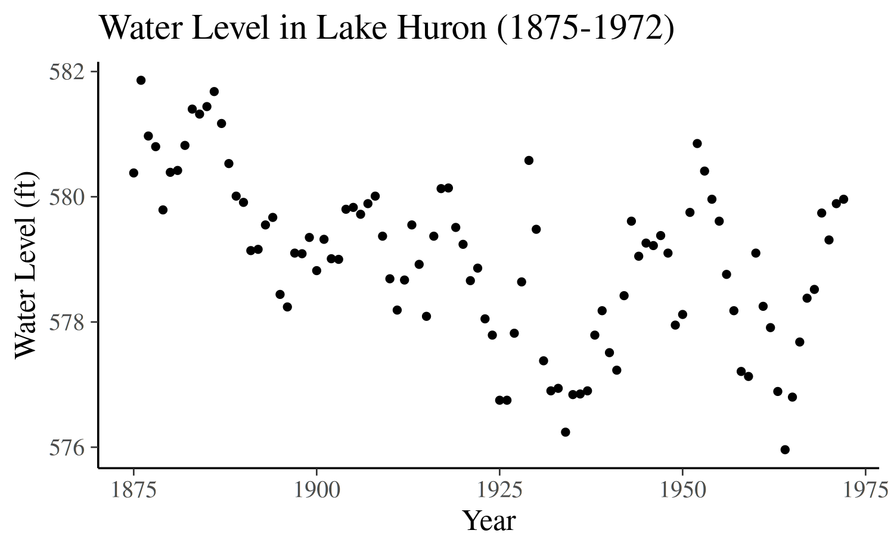
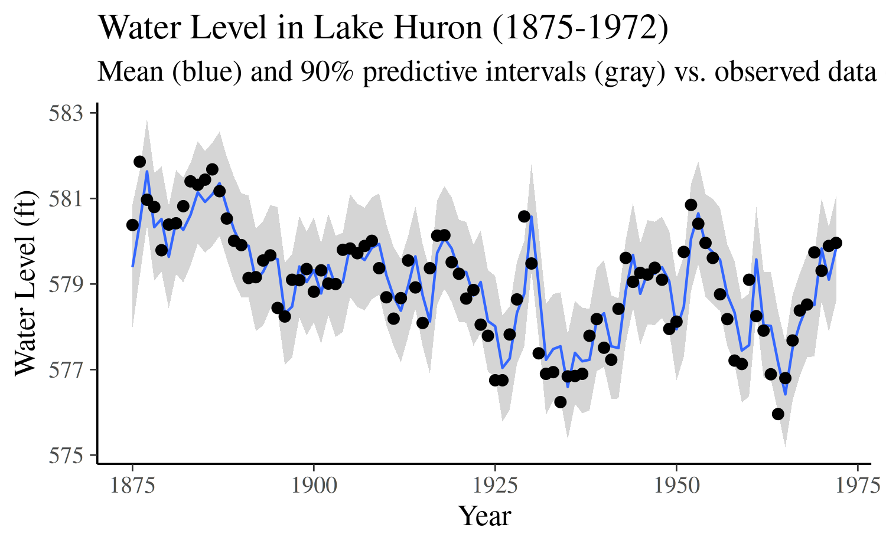
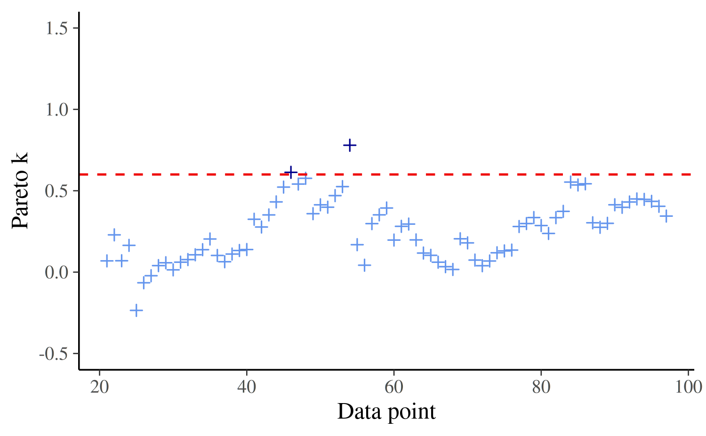
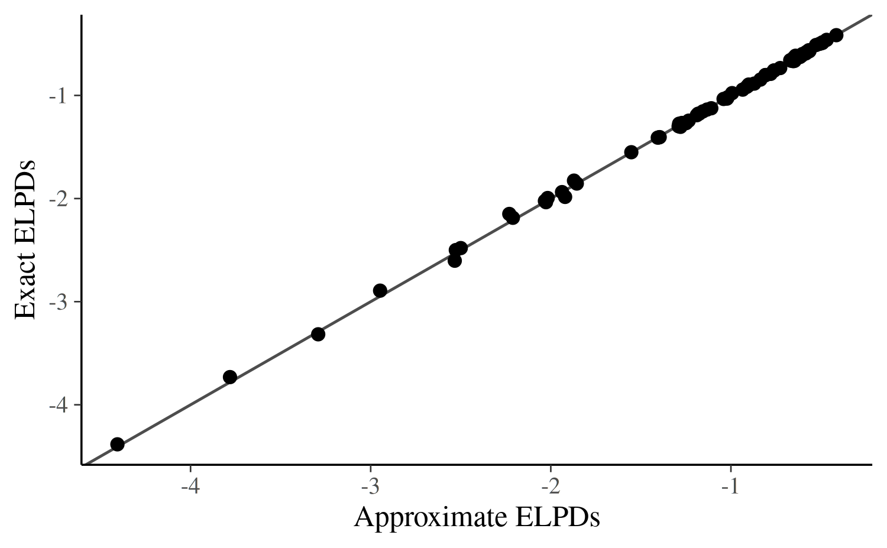
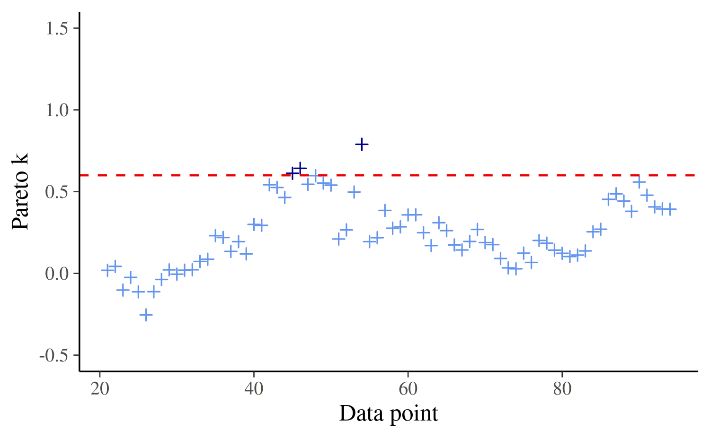

Approximate leave-future-out cross-validation for Bayesian time series models
Paul Bürkner, Jonah Gabry, Aki Vehtari
2025-12-23
Source:vignettes/loo2-lfo.Rmd
loo2-lfo.RmdIntroduction
One of the most common goals of a time series analysis is to use the observed series to inform predictions for future observations. We will refer to this task of predicting a sequence of \(M\) future observations as \(M\)-step-ahead prediction (\(M\)-SAP). Fortunately, once we have fit a model and can sample from the posterior predictive distribution, it is straightforward to generate predictions as far into the future as we want. It is also straightforward to evaluate the \(M\)-SAP performance of a time series model by comparing the predictions to the observed sequence of \(M\) future data points once they become available.
Unfortunately, we are often in the position of having to use a model to inform decisions before we can collect the future observations required for assessing the predictive performance. If we have many competing models we may also need to first decide which of the models (or which combination of the models) we should rely on for predictions. In these situations the best we can do is to use methods for approximating the expected predictive performance of our models using only the observations of the time series we already have.
If there were no time dependence in the data or if the focus is to assess the non-time-dependent part of the model, we could use methods like leave-one-out cross-validation (LOO-CV). For a data set with \(N\) observations, we refit the model \(N\) times, each time leaving out one of the \(N\) observations and assessing how well the model predicts the left-out observation. LOO-CV is very expensive computationally in most realistic settings, but the Pareto smoothed importance sampling (PSIS, Vehtari et al, 2017, 2024) algorithm provided by the loo package allows for approximating exact LOO-CV with PSIS-LOO-CV. PSIS-LOO-CV requires only a single fit of the full model and comes with diagnostics for assessing the validity of the approximation.
With a time series we can do something similar to LOO-CV but, except in a few cases, it does not make sense to leave out observations one at a time because then we are allowing information from the future to influence predictions of the past (i.e., times \(t + 1, t+2, \ldots\) should not be used to predict for time \(t\)). To apply the idea of cross-validation to the \(M\)-SAP case, instead of leave-one-out cross-validation we need some form of leave-future-out cross-validation (LFO-CV). As we will demonstrate in this case study, LFO-CV does not refer to one particular prediction task but rather to various possible cross-validation approaches that all involve some form of prediction for new time series data. Like exact LOO-CV, exact LFO-CV requires refitting the model many times to different subsets of the data, which is computationally very costly for most nontrivial examples, in particular for Bayesian analyses where refitting the model means estimating a new posterior distribution rather than a point estimate.
Although PSIS-LOO-CV provides an efficient approximation to exact LOO-CV, until now there has not been an analogous approximation to exact LFO-CV that drastically reduces the computational burden while also providing informative diagnostics about the quality of the approximation. In this case study we present PSIS-LFO-CV, an algorithm that typically only requires refitting the time-series model a small number times and will make LFO-CV tractable for many more realistic applications than previously possible.
More details can be found in our paper about approximate LFO-CV (Bürkner, Gabry, & Vehtari, 2020), which is available as a preprint on arXiv (https://arxiv.org/abs/1902.06281).
\(M\)-step-ahead predictions
Assume we have a time series of observations \(y = (y_1, y_2, \ldots, y_N)\) and let \(L\) be the minimum number of observations from the series that we will require before making predictions for future data. Depending on the application and how informative the data is, it may not be possible to make reasonable predictions for \(y_{i+1}\) based on \((y_1, \dots, y_{i})\) until \(i\) is large enough so that we can learn enough about the time series to predict future observations. Setting \(L=10\), for example, means that we will only assess predictive performance starting with observation \(y_{11}\), so that we always have at least 10 previous observations to condition on.
In order to assess \(M\)-SAP performance we would like to compute the predictive densities
\[ p(y_{i+1:M} \,|\, y_{1:i}) = p(y_{i+1}, \ldots, y_{i + M} \,|\, y_{1},...,y_{i}) \]
for each \(i \in \{L, \ldots, N - M\}\). The quantities \(p(y_{i+1:M} \,|\, y_{1:i})\) can be computed with the help of the posterior distribution \(p(\theta \,|\, y_{1:i})\) of the parameters \(\theta\) conditional on only the first \(i\) observations of the time-series:
\[ p(y_{i+1:M} \,| \, y_{1:i}) = \int p(y_{i+1:M} \,| \, y_{1:i}, \theta) \, p(\theta\,|\,y_{1:i}) \,d\theta. \]
Having obtained \(S\) draws \((\theta_{1:i}^{(1)}, \ldots, \theta_{1:i}^{(S)})\) from the posterior distribution \(p(\theta\,|\,y_{1:i})\), we can estimate \(p(y_{i+1:M} | y_{1:i})\) as
\[ p(y_{i+1:M} \,|\, y_{1:i}) \approx \frac{1}{S}\sum_{s=1}^S p(y_{i+1:M} \,|\, y_{1:i}, \theta_{1:i}^{(s)}). \]
Approximate \(M\)-SAP using importance-sampling
Unfortunately, the math above makes use of the posterior distributions from many different fits of the model to different subsets of the data. That is, to obtain the predictive density \(p(y_{i+1:M} \,|\, y_{1:i})\) requires fitting a model to only the first \(i\) data points, and we will need to do this for every value of \(i\) under consideration (all \(i \in \{L, \ldots, N - M\}\)).
To reduce the number of models that need to be fit for the purpose of obtaining each of the densities \(p(y_{i+1:M} \,|\, y_{1:i})\), we propose the following algorithm. First, we refit the model using the first \(L\) observations of the time series and then perform a single exact \(M\)-step-ahead prediction step for \(p(y_{L+1:M} \,|\, y_{1:L})\). Recall that \(L\) is the minimum number of observations we have deemed acceptable for making predictions (setting \(L=0\) means the first data point will be predicted only based on the prior). We define \(i^\star = L\) as the current point of refit. Next, starting with \(i = i^\star + 1\), we approximate each \(p(y_{i+1:M} \,|\, y_{1:i})\) via
\[ p(y_{i+1:M} \,|\, y_{1:i}) \approx \frac{ \sum_{s=1}^S w_i^{(s)}\, p(y_{i+1:M} \,|\, y_{1:i}, \theta^{(s)})} { \sum_{s=1}^S w_i^{(s)}}, \]
where \(\theta^{(s)} = \theta^{(s)}_{1:i^\star}\) are draws from the posterior distribution based on the first \(i^\star\) observations and \(w_i^{(s)}\) are the PSIS weights obtained in two steps. First, we compute the raw importance ratios
\[ r_i^{(s)} = \frac{f_{1:i}(\theta^{(s)})}{f_{1:i^\star}(\theta^{(s)})} \propto \prod_{j \in (i^\star + 1):i} p(y_j \,|\, y_{1:(j-1)}, \theta^{(s)}), \]
and then stabilize them using PSIS. The function \(f_{1:i}\) denotes the posterior distribution based on the first \(i\) observations, that is, \(f_{1:i} = p(\theta \,|\, y_{1:i})\), with \(f_{1:i^\star}\) defined analogously. The index set \((i^\star + 1):i\) indicates all observations which are part of the data for the model \(f_{1:i}\) whose predictive performance we are trying to approximate but not for the actually fitted model \(f_{1:i^\star}\). The proportional statement arises from the fact that we ignore the normalizing constants \(p(y_{1:i})\) and \(p(y_{1:i^\star})\) of the compared posteriors, which leads to a self-normalized variant of PSIS (see Vehtari et al, 2017).
Continuing with the next observation, we gradually increase \(i\) by \(1\) (we move forward in time) and repeat the process. At some observation \(i\), the variability of the importance ratios \(r_i^{(s)}\) will become too large and importance sampling will fail. We will refer to this particular value of \(i\) as \(i^\star_1\). To identify the value of \(i^\star_1\), we check for which value of \(i\) does the estimated shape parameter \(k\) of the generalized Pareto distribution first cross a certain threshold \(\tau\) (Vehtari et al, 2024). Only then do we refit the model using the observations up to \(i^\star_1\) and restart the process from there by setting \(\theta^{(s)} = \theta^{(s)}_{1:i^\star_1}\) and \(i^\star = i^\star_1\) until the next refit.
In some cases we may only need to refit once and in other cases we will find a value \(i^\star_2\) that requires a second refitting, maybe an \(i^\star_3\) that requires a third refitting, and so on. We refit as many times as is required (only when \(k > \tau\)) until we arrive at observation \(i = N - M\). For LOO, assuming posterior sample size is 4000 or larger, we recommend to use a threshold of \(\tau = 0.7\) (Vehtari et al, 2017, 2024) and it turns out this is a reasonable threshold for LFO as well (Bürkner et al. 2020).
Autoregressive models
Autoregressive (AR) models are some of the most commonly used time-series models. An AR(p) model —an autoregressive model of order \(p\)— can be defined as
\[ y_i = \eta_i + \sum_{k = 1}^p \varphi_k y_{i - k} + \varepsilon_i, \]
where \(\eta_i\) is the linear predictor for the \(i\)th observation, \(\phi_k\) are the autoregressive parameters and \(\varepsilon_i\) are pairwise independent errors, which are usually assumed to be normally distributed with equal variance \(\sigma^2\). The model implies a recursive formula that allows for computing the right-hand side of the above equation for observation \(i\) based on the values of the equations for previous observations.
Case Study: Annual measurements of the level of Lake Huron
To illustrate the application of PSIS-LFO-CV for estimating expected \(M\)-SAP performance, we will fit a model for 98 annual measurements of the water level (in feet) of Lake Huron from the years 1875–1972. This data set is found in the datasets R package, which is installed automatically with R.
In addition to the loo package, for this analysis we will use the brms interface to Stan to generate a Stan program and fit the model, and also the bayesplot and ggplot2 packages for plotting.
library("brms")
library("loo")
library("bayesplot")
library("ggplot2")
color_scheme_set("brightblue")
theme_set(theme_default())
CHAINS <- 4
SEED <- 5838296
set.seed(SEED)Before fitting a model, we will first put the data into a data frame and then look at the time series.
N <- length(LakeHuron)
df <- data.frame(
y = as.numeric(LakeHuron),
year = as.numeric(time(LakeHuron)),
time = 1:N
)
ggplot(df, aes(x = year, y = y)) +
geom_point(size = 1) +
labs(
y = "Water Level (ft)",
x = "Year",
title = "Water Level in Lake Huron (1875-1972)"
) 
The above plot shows rather strong autocorrelation of the time-series as well as some trend towards lower levels for later points in time.
We can specify an AR(4) model for these data using the brms package as follows:
fit <- brm(
y ~ ar(time, p = 4),
data = df,
prior = prior(normal(0, 0.5), class = "ar"),
control = list(adapt_delta = 0.99),
seed = SEED,
chains = CHAINS
)The model implied predictions along with the observed values can be plotted, which reveals a rather good fit to the data.
preds <- posterior_predict(fit)
preds <- cbind(
Estimate = colMeans(preds),
Q5 = apply(preds, 2, quantile, probs = 0.05),
Q95 = apply(preds, 2, quantile, probs = 0.95)
)
ggplot(cbind(df, preds), aes(x = year, y = Estimate)) +
geom_smooth(aes(ymin = Q5, ymax = Q95), stat = "identity", linewidth = 0.5) +
geom_point(aes(y = y)) +
labs(
y = "Water Level (ft)",
x = "Year",
title = "Water Level in Lake Huron (1875-1972)",
subtitle = "Mean (blue) and 90% predictive intervals (gray) vs. observed data (black)"
) 
To allow for reasonable predictions of future values, we will require at least \(L = 20\) historical observations (20 years) to make predictions.
L <- 20We first perform approximate leave-one-out cross-validation (LOO-CV) for the purpose of later comparison with exact and approximate LFO-CV for the 1-SAP case.
Computed from 4000 by 78 log-likelihood matrix.
Estimate SE
elpd_loo -88.7 6.4
p_loo 4.8 1.0
looic 177.4 12.7
------
MCSE of elpd_loo is 0.0.
MCSE and ESS estimates assume independent draws (r_eff=1).
All Pareto k estimates are good (k < 0.7).
See help('pareto-k-diagnostic') for details.1-step-ahead predictions leaving out all future values
The most basic version of \(M\)-SAP is 1-SAP, in which we predict only one step ahead. In this case, \(y_{i+1:M}\) simplifies to \(y_{i}\) and the LFO-CV algorithm becomes considerably simpler than for larger values of \(M\).
Exact 1-step-ahead predictions
Before we compute approximate LFO-CV using PSIS we will first compute exact LFO-CV for the 1-SAP case so we can use it as a benchmark later. The initial step for the exact computation is to calculate the log-predictive densities by refitting the model many times:
loglik_exact <- matrix(nrow = ndraws(fit), ncol = N)
for (i in L:(N - 1)) {
past <- 1:i
oos <- i + 1
df_past <- df[past, , drop = FALSE]
df_oos <- df[c(past, oos), , drop = FALSE]
fit_i <- update(fit, newdata = df_past, recompile = FALSE)
loglik_exact[, i + 1] <- log_lik(fit_i, newdata = df_oos, oos = oos)[, oos]
}Then we compute the exact expected log predictive density (ELPD):
# some helper functions we'll use throughout
# more stable than log(sum(exp(x)))
log_sum_exp <- function(x) {
max_x <- max(x)
max_x + log(sum(exp(x - max_x)))
}
# more stable than log(mean(exp(x)))
log_mean_exp <- function(x) {
log_sum_exp(x) - log(length(x))
}
# compute log of raw importance ratios
# sums over observations *not* over posterior samples
sum_log_ratios <- function(loglik, ids = NULL) {
if (!is.null(ids)) loglik <- loglik[, ids, drop = FALSE]
rowSums(loglik)
}
# for printing comparisons later
rbind_print <- function(...) {
round(rbind(...), digits = 2)
}
exact_elpds_1sap <- apply(loglik_exact, 2, log_mean_exp)
exact_elpd_1sap <- c(ELPD = sum(exact_elpds_1sap[-(1:L)]))
rbind_print(
"LOO" = loo_cv$estimates["elpd_loo", "Estimate"],
"LFO" = exact_elpd_1sap
) ELPD
LOO -88.68
LFO -92.31We see that the ELPD from LFO-CV for 1-step-ahead predictions is lower than the ELPD estimate from LOO-CV, which should be expected since LOO-CV is making use of more of the time series. That is, since the LFO-CV approach only uses observations from before the left-out data point but LOO-CV uses all data points other than the left-out observation, we should expect to see the larger ELPD from LOO-CV.
Approximate 1-step-ahead predictions
We compute approximate 1-SAP with refit at observations where the Pareto \(k\) estimate exceeds the threshold of \(0.7\).
k_thres <- 0.7The code becomes a little bit more involved as compared to the exact LFO-CV. Note that we can compute exact 1-SAP at the refitting points, which comes with no additional computational costs since we had to refit the model anyway.
approx_elpds_1sap <- rep(NA, N)
# initialize the process for i = L
past <- 1:L
oos <- L + 1
df_past <- df[past, , drop = FALSE]
df_oos <- df[c(past, oos), , drop = FALSE]
fit_past <- update(fit, newdata = df_past, recompile = FALSE)
loglik <- log_lik(fit_past, newdata = df_oos, oos = oos)
approx_elpds_1sap[L + 1] <- log_mean_exp(loglik[, oos])
# iterate over i > L
i_refit <- L
refits <- L
ks <- NULL
for (i in (L + 1):(N - 1)) {
past <- 1:i
oos <- i + 1
df_past <- df[past, , drop = FALSE]
df_oos <- df[c(past, oos), , drop = FALSE]
loglik <- log_lik(fit_past, newdata = df_oos, oos = oos)
logratio <- sum_log_ratios(loglik, (i_refit + 1):i)
psis_obj <- suppressWarnings(psis(logratio))
k <- pareto_k_values(psis_obj)
ks <- c(ks, k)
if (k > k_thres) {
# refit the model based on the first i observations
i_refit <- i
refits <- c(refits, i)
fit_past <- update(fit_past, newdata = df_past, recompile = FALSE)
loglik <- log_lik(fit_past, newdata = df_oos, oos = oos)
approx_elpds_1sap[i + 1] <- log_mean_exp(loglik[, oos])
} else {
lw <- weights(psis_obj, normalize = TRUE)[, 1]
approx_elpds_1sap[i + 1] <- log_sum_exp(lw + loglik[, oos])
}
} We see that the final Pareto-\(k\)-estimates are mostly well below the threshold and that we only needed to refit the model a few times:
plot_ks <- function(ks, ids, thres = 0.6) {
dat_ks <- data.frame(ks = ks, ids = ids)
ggplot(dat_ks, aes(x = ids, y = ks)) +
geom_point(aes(color = ks > thres), shape = 3, show.legend = FALSE) +
geom_hline(yintercept = thres, linetype = 2, color = "red2") +
scale_color_manual(values = c("cornflowerblue", "darkblue")) +
labs(x = "Data point", y = "Pareto k") +
ylim(-0.5, 1.5)
}
cat("Using threshold ", k_thres,
", model was refit ", length(refits),
" times, at observations", refits)Using threshold 0.7 , model was refit 2 times, at observations 20 54
plot_ks(ks, (L + 1):(N - 1))
The approximate 1-SAP ELPD is remarkably similar to the exact 1-SAP ELPD computed above, which indicates our algorithm to compute approximate 1-SAP worked well for the present data and model.
approx_elpd_1sap <- sum(approx_elpds_1sap, na.rm = TRUE)
rbind_print(
"approx LFO" = approx_elpd_1sap,
"exact LFO" = exact_elpd_1sap
) ELPD
approx LFO -92.44
exact LFO -92.31Plotting exact against approximate predictions, we see that no approximation value deviates far from its exact counterpart, providing further evidence for the good quality of our approximation.
dat_elpd <- data.frame(
approx_elpd = approx_elpds_1sap,
exact_elpd = exact_elpds_1sap
)
ggplot(dat_elpd, aes(x = approx_elpd, y = exact_elpd)) +
geom_abline(color = "gray30") +
geom_point(size = 2) +
labs(x = "Approximate ELPDs", y = "Exact ELPDs")
We can also look at the maximum difference and average difference between the approximate and exact ELPD calculations, which also indicate a ver close approximation:
max_diff <- with(dat_elpd, max(abs(approx_elpd - exact_elpd), na.rm = TRUE))
mean_diff <- with(dat_elpd, mean(abs(approx_elpd - exact_elpd), na.rm = TRUE))
rbind_print(
"Max diff" = round(max_diff, 2),
"Mean diff" = round(mean_diff, 3)
) [,1]
Max diff 0.08
Mean diff 0.01\(M\)-step-ahead predictions leaving out all future values
To illustrate the application of \(M\)-SAP for \(M > 1\), we next compute exact and approximate LFO-CV for the 4-SAP case.
Exact \(M\)-step-ahead predictions
The necessary steps are the same as for 1-SAP with the exception that the log-density values of interest are now the sums of the log predictive densities of four consecutive observations. Further, the stability of the PSIS approximation actually stays the same for all \(M\) as it only depends on the number of observations we leave out, not on the number of observations we predict.
M <- 4
loglikm <- matrix(nrow = ndraws(fit), ncol = N)
for (i in L:(N - M)) {
past <- 1:i
oos <- (i + 1):(i + M)
df_past <- df[past, , drop = FALSE]
df_oos <- df[c(past, oos), , drop = FALSE]
fit_past <- update(fit, newdata = df_past, recompile = FALSE)
loglik <- log_lik(fit_past, newdata = df_oos, oos = oos)
loglikm[, i + 1] <- rowSums(loglik[, oos])
}
exact_elpds_4sap <- apply(loglikm, 2, log_mean_exp)
(exact_elpd_4sap <- c(ELPD = sum(exact_elpds_4sap, na.rm = TRUE))) ELPD
-405.5225 Approximate \(M\)-step-ahead predictions
Computing the approximate PSIS-LFO-CV for the 4-SAP case is a little bit more involved than the approximate version for the 1-SAP case, although the underlying principles remain the same.
approx_elpds_4sap <- rep(NA, N)
# initialize the process for i = L
past <- 1:L
oos <- (L + 1):(L + M)
df_past <- df[past, , drop = FALSE]
df_oos <- df[c(past, oos), , drop = FALSE]
fit_past <- update(fit, newdata = df_past, recompile = FALSE)
loglik <- log_lik(fit_past, newdata = df_oos, oos = oos)
loglikm <- rowSums(loglik[, oos])
approx_elpds_4sap[L + 1] <- log_mean_exp(loglikm)
# iterate over i > L
i_refit <- L
refits <- L
ks <- NULL
for (i in (L + 1):(N - M)) {
past <- 1:i
oos <- (i + 1):(i + M)
df_past <- df[past, , drop = FALSE]
df_oos <- df[c(past, oos), , drop = FALSE]
loglik <- log_lik(fit_past, newdata = df_oos, oos = oos)
logratio <- sum_log_ratios(loglik, (i_refit + 1):i)
psis_obj <- suppressWarnings(psis(logratio))
k <- pareto_k_values(psis_obj)
ks <- c(ks, k)
if (k > k_thres) {
# refit the model based on the first i observations
i_refit <- i
refits <- c(refits, i)
fit_past <- update(fit_past, newdata = df_past, recompile = FALSE)
loglik <- log_lik(fit_past, newdata = df_oos, oos = oos)
loglikm <- rowSums(loglik[, oos])
approx_elpds_4sap[i + 1] <- log_mean_exp(loglikm)
} else {
lw <- weights(psis_obj, normalize = TRUE)[, 1]
loglikm <- rowSums(loglik[, oos])
approx_elpds_4sap[i + 1] <- log_sum_exp(lw + loglikm)
}
} Again, we see that the final Pareto-\(k\)-estimates are mostly well below the threshold and that we only needed to refit the model a few times:
cat("Using threshold ", k_thres,
", model was refit ", length(refits),
" times, at observations", refits)Using threshold 0.7 , model was refit 2 times, at observations 20 54
plot_ks(ks, (L + 1):(N - M))
The approximate ELPD computed for the 4-SAP case is not as close to its exact counterpart as in the 1-SAP case. In general, the larger \(M\), the larger the variation of the approximate ELPD around the exact ELPD. It turns out that the ELPD estimates of AR-models with \(M>1\) show particular variation due to their predictions’ dependency on other predicted values. In Bürkner et al. (2020) we provide further explanation and simulations for these cases.
approx_elpd_4sap <- sum(approx_elpds_4sap, na.rm = TRUE)
rbind_print(
"Approx LFO" = approx_elpd_4sap,
"Exact LFO" = exact_elpd_4sap
) ELPD
Approx LFO -409.08
Exact LFO -405.52Plotting exact against approximate pointwise predictions confirms that, for a few specific data points, the approximate predictions underestimate the exact predictions.
dat_elpd_4sap <- data.frame(
approx_elpd = approx_elpds_4sap,
exact_elpd = exact_elpds_4sap
)
ggplot(dat_elpd_4sap, aes(x = approx_elpd, y = exact_elpd)) +
geom_abline(color = "gray30") +
geom_point(size = 2) +
labs(x = "Approximate ELPDs", y = "Exact ELPDs")
Conclusion
In this case study we have shown how to do carry out exact and approximate leave-future-out cross-validation for \(M\)-step-ahead prediction tasks. For the data and model used in our example, the PSIS-LFO-CV algorithm provides reasonably stable and accurate results despite not requiring us to refit the model nearly as many times. For more details on approximate LFO-CV, we refer to Bürkner et al. (2020).
References
Bürkner P. C., Gabry J., & Vehtari A. (2020). Approximate leave-future-out cross-validation for time series models. Journal of Statistical Computation and Simulation, 90(14):2499-2523. :/10.1080/00949655.2020.1783262. Online. arXiv preprint.
Vehtari A., Gelman A., & Gabry J. (2017). Practical Bayesian model evaluation using leave-one-out cross-validation and WAIC. Statistics and Computing, 27(5), 1413–1432. :10.1007/s11222-016-9696-4. Online. arXiv preprint arXiv:1507.04544.
Vehtari, A., Simpson, D., Gelman, A., Yao, Y., and Gabry, J. (2024). Pareto smoothed importance sampling. Journal of Machine Learning Research, 25(72):1-58. PDF
Appendix
Appendix: Session information
R version 4.5.2 (2025-10-31)
Platform: x86_64-pc-linux-gnu
Running under: Ubuntu 24.04.3 LTS
Matrix products: default
BLAS: /usr/lib/x86_64-linux-gnu/openblas-pthread/libblas.so.3
LAPACK: /usr/lib/x86_64-linux-gnu/openblas-pthread/libopenblasp-r0.3.26.so; LAPACK version 3.12.0
locale:
[1] LC_CTYPE=C.UTF-8 LC_NUMERIC=C LC_TIME=C.UTF-8
[4] LC_COLLATE=C.UTF-8 LC_MONETARY=C.UTF-8 LC_MESSAGES=C.UTF-8
[7] LC_PAPER=C.UTF-8 LC_NAME=C LC_ADDRESS=C
[10] LC_TELEPHONE=C LC_MEASUREMENT=C.UTF-8 LC_IDENTIFICATION=C
time zone: UTC
tzcode source: system (glibc)
attached base packages:
[1] stats graphics grDevices utils datasets methods base
other attached packages:
[1] ggplot2_4.0.1 bayesplot_1.15.0 loo_2.9.0.9000 brms_2.23.0
[5] Rcpp_1.1.0 knitr_1.51
loaded via a namespace (and not attached):
[1] gtable_0.3.6 tensorA_0.36.2.1 xfun_0.55
[4] bslib_0.9.0 QuickJSR_1.8.1 htmlwidgets_1.6.4
[7] processx_3.8.6 inline_0.3.21 lattice_0.22-7
[10] callr_3.7.6 ps_1.9.1 vctrs_0.6.5
[13] tools_4.5.2 generics_0.1.4 stats4_4.5.2
[16] parallel_4.5.2 tibble_3.3.0 pkgconfig_2.0.3
[19] Matrix_1.7-4 checkmate_2.3.3 RColorBrewer_1.1-3
[22] S7_0.2.1 desc_1.4.3 distributional_0.5.0
[25] RcppParallel_5.1.11-1 lifecycle_1.0.4 compiler_4.5.2
[28] farver_2.1.2 stringr_1.6.0 textshaping_1.0.4
[31] Brobdingnag_1.2-9 codetools_0.2-20 htmltools_0.5.9
[34] sass_0.4.10 yaml_2.3.12 pillar_1.11.1
[37] pkgdown_2.2.0 jquerylib_0.1.4 cachem_1.1.0
[40] StanHeaders_2.32.10 bridgesampling_1.2-1 abind_1.4-8
[43] nlme_3.1-168 posterior_1.6.1 rstan_2.32.7
[46] tidyselect_1.2.1 digest_0.6.39 mvtnorm_1.3-3
[49] stringi_1.8.7 dplyr_1.1.4 labeling_0.4.3
[52] fastmap_1.2.0 grid_4.5.2 cli_3.6.5
[55] magrittr_2.0.4 pkgbuild_1.4.8 withr_3.0.2
[58] scales_1.4.0 backports_1.5.0 rmarkdown_2.30
[61] matrixStats_1.5.0 otel_0.2.0 gridExtra_2.3
[64] ragg_1.5.0 coda_0.19-4.1 evaluate_1.0.5
[67] rstantools_2.5.0 rlang_1.1.6 glue_1.8.0
[70] jsonlite_2.0.0 R6_2.6.1 systemfonts_1.3.1
[73] fs_1.6.6